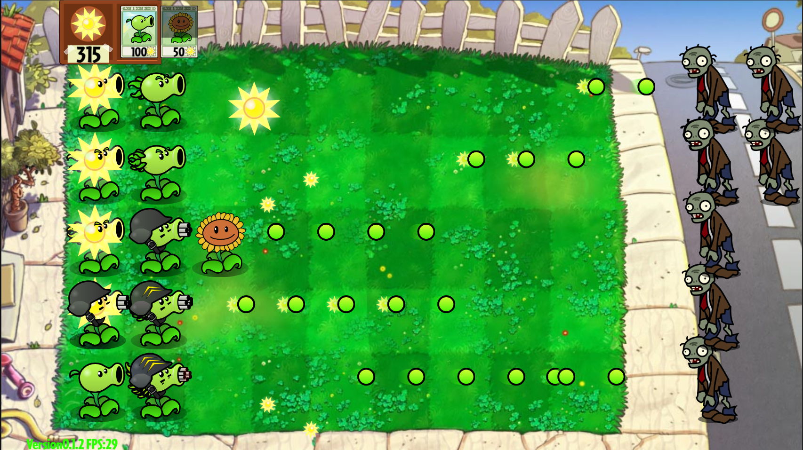

游戏简介
Game Introduction
植物大战僵尸dd版（Plants Vs. Zombies dd Mod）是一个基于经典游戏《植物大战僵尸》的非官方修改版本，由游戏爱好者社区开发。
这个mod在原版游戏的基础上，增加了大量新内容，包括全新植物、僵尸类型、关卡设计和游戏机制，为玩家带来全新的游戏体验。
dd版注重游戏平衡性和策略深度，同时保留了原作的幽默风格和经典玩法，是老玩家重温经典和新玩家体验创新的绝佳选择。
无论你是塔防游戏爱好者，还是植物大战僵尸的忠实粉丝，dd版都将带给你数小时的欢乐游戏时光。

主要特性
Key Features

dd版在保留原版核心玩法的基础上，引入了大量创新内容：
- 15种全新植物，各有独特能力
- 12种新型僵尸，带来全新挑战
- 30个全新关卡，包含5个世界场景
- 新增天气系统和昼夜变化
- 植物升级系统和特殊能力
- 重新平衡的游戏经济系统
这些新特性使得游戏策略更加多样化，每一局游戏都有不同的体验。
新植物系统
New Plant System
新增15种独特植物，每种都有特殊能力和升级路径，丰富战术选择。
新僵尸类型
New Zombie Types
12种新型僵尸，拥有特殊技能和行为模式，挑战玩家的防御策略。
扩展关卡
Extended Levels
30个全新关卡，包含5个不同主题世界，每个世界有独特的游戏机制。
植物图鉴
Plant Gallery
Shift + 鼠标滚轮水平滚动
1/12
僵尸图鉴
Zombie Gallery
Shift + 鼠标滚轮水平滚动
1/6